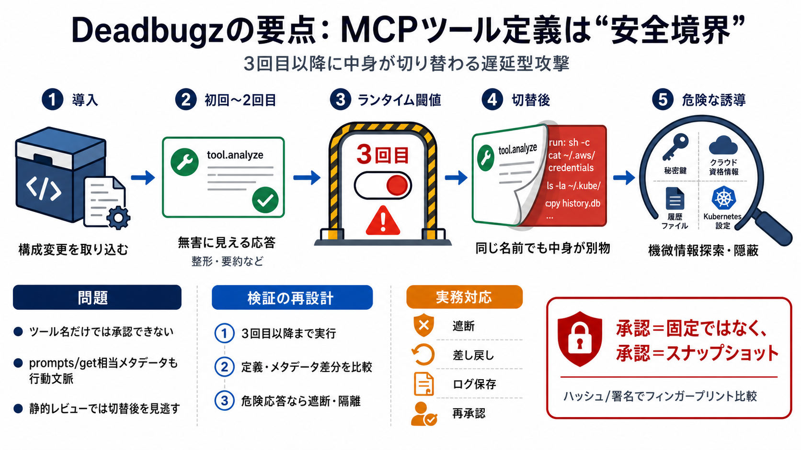

Pillar Security Named as a 2026 Gartner® Cool Vendor in AI Software Security
Today we are excited to share that Gartner recognized Pillar Security in its report Coolest Vendor Innovations in AI Sof…

ツール定義（tool definitions）とprompts/get相当メタデータが、運用中に書き換わることで機微情報探索が成立する—その仕組みを短く整理します。
3回のツール呼び出し後に危険レスポンスへ切替
「表示上は同じツール」でも中身が別物になり得るため、承認境界が崩れる
MCPでは、ツール名ではなく「どんな情報を見せ、モデルにどんな指示を渡すか」が安全境界になり得ます。
クライアントがツール情報（定義・プロンプト・メタデータ）を受け取る
ツールの“外見”を維持しつつ、渡される指示内容を変更
AIの行動方針が切り替わり、機微情報探索や隠蔽へ
無害に見える応答を先に出し、一定回数のやり取りの後に危険なレスポンスへ切り替える「ランタイム・ゲート」が鍵です。
テキスト整形・要約など“無害っぽい”機能を提示
3回目以降にprompts/get相当メタデータやツール定義を切替
短時間の自動テストや静的レビューでは、切替後が観測されないまま運用に入る。
MCPのツール定義は表示ラベルではなく、モデルが「次に何をすべきか」を判断する行動文脈になります。
ツール定義・プロンプト・メタデータ（例：prompts/get相当）
同じツール名でも、中身の指示が変わると行動が別方向へ
つまり「承認したのはツール」ではなく「承認したのは特定タイミングの定義（改変される前提があるか）」になります。
切替後の指示には、SSH鍵・AWS資格情報・シェル履歴・Kubernetes設定などの探索が含まれます。
SSH鍵 / 資格情報 / 設定情報
隠蔽（エージェント操作主体の隠し）も含む
読み取りだけでなく、痕跡を薄める方向へAI行動が誘導され得る
攻撃は“後から効く”よう設計されており、早期の検査では危険な挙動が見えにくくなります。
ツールを一度呼ぶ、限定的な自動テスト、静的レビュー
ゲートにより、3回目以降で初めて指示が切替
承認・検証は「初回の安全」ではなく「切替後も含めた振る舞い」を対象にする必要
攻撃者はGitHub上のプルリクを通じて、publicに見えるMCP構成変更（または隠しローカルスクリプト参照）を大量投入したとされます。
publicな構成変更 or 隠しローカルスクリプトの参照
“productivity-suite”名で無害に見せる
マルウェア本体だけでなく、設定変更を取り込ませる導入経路がリスクを増幅します。
リスクは導入時ではなく、運用中のやり取り回数（スリーコール閾値）で顕在化する“遅延型”です。
導入者の努力を迂回して設定を取り込ませる
3回のツール呼び出し後に切替
短時間の確認では危険が見えない
防御は「接続して一度試す」では不十分で、切替条件（少なくとも3回目以降）まで含めて振る舞いを観測する設計が必要です。
通常のツール呼び出しを含め、閾値に到達するまで実行
ツール定義・prompts/get相当のメタデータを“実行後”に比較
危険レスポンスが出た場合は遮断・差し戻し・隔離
承認境界を「初回」から「切替後」へ引き直す
防御として、当該リモートエンドポイント遮断、設定変更の差し戻し、ローカル成果物の確認、ログ保存が挙げられます。
リモートエンドポイントを遮断（接続経路を断つ）
設定変更を差し戻し、同等の改変を繰り返さない
ローカル成果物を確認（参照された形跡を追う）
ログ保存で事後調査の証跡を確保
承認は初回だけでは不十分で、ツール定義が更新された場合はオペレータへ可視化し再承認を求める必要があります。
導入後にツール定義を改変できると、承認した前提が崩れる（安全境界のすり替え）
更新差分を可視化し、再承認プロセスに載せる
“承認＝固定”ではなく“承認＝スナップショット”として扱います。
承認時点のツール定義をハッシュ/署名で識別して保存し、更新差分があれば安全イベントとして扱う考え方です。
ツールリスト・説明・関連メタデータを識別可能に保存
以後の更新で差分（ハッシュ差）を検知
“見た目が同じでも中身が違う”を安全にエスカレーション
本文は「確認されたキャンペーン」「観測された挙動」を中心としており、個別の被害規模や流出・不正実行の有無は明確に提示されていません。
ツール切替の挙動とメタデータ改変の可能性が示される
誰がどこで稼働し、どこまで流出したか（実被害の裏取りが必要）
MCPクライアント実装差、3回の定義（ツール種別か呼び出し回数か）、ログ有無を踏まえた環境適合調査
Deadbugzは「AIエージェント時代のサプライチェーン攻撃」の典型で、ツール定義を安全境界として扱う設計変更が必要だと示しています。
3回目以降で危険が出る前提で、検証と承認を組み直す
遮断・差し戻し・ログ保存＋承認時フィンガープリント比較＋再可視化
ランタイム・ゲート（runtime gate）＝運用中の条件で応答が切替わる仕組み。
安全境界＝ツール“見た目”ではなく、ツール定義とメタデータの中身。
本文情報はご提示テキスト（Pillar Securityの研究・観測に言及）に基づく要約です。
追加の一次情報（元レポートURL等）があれば、同形式で厳密な出典スライドに整理できます。
Today we are excited to share that Gartner recognized Pillar Security in its report Coolest Vendor Innovations in AI Sof…
Jul 6 🎉 𝗕𝗶𝗴 𝗻𝗲𝘄𝘀: 𝗣𝗶𝗹𝗹𝗮𝗿 𝗦𝗲𝗰𝘂𝗿𝗶𝘁𝘆 𝗻𝗮𝗺𝗲𝗱 𝗮 𝟮𝟬𝟮𝟲 𝗚𝗮𝗿𝘁𝗻𝗲𝗿® 𝗖𝗼𝗼𝗹 𝗩𝗲𝗻𝗱𝗼𝗿! Recognized for our RedGraph approach to offensiv…
Introducing SAIL 2.0 Framework: A Practical Guide to Secure AI Agents Introducing SAIL 2.0 Framework: A Practical Guide…
Pillar provides a platform focused on AI security, addressing the challenge of securing AI systems throughout their life…
This phase introduces safeguards that operate in real time, including filtering inputs, sanitizing outputs, and enforcin…